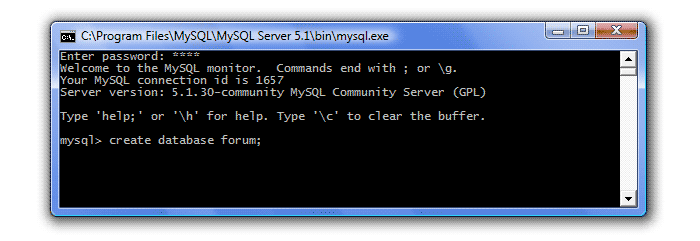

Shunday qilib, siz MySQL-ni o'rnatdingiz va biz SQL tilini o'rganishni boshlaymiz. Ma'lumotlar bazasi asoslari bo'yicha 3-darsda biz forum uchun kichik ma'lumotlar bazasining kontseptual modelini yaratdik. MySQL ma'lumotlar bazasida buni amalga oshirish vaqti keldi.
Buning uchun avval MySQL serverini ishga tushirishingiz kerak. Boshlash menyusiga o'ting - Dasturlar - MySQL - MySQL Server 5.1 - MySQL Buyruqlar qatori mijozi. Parolni kiritishingizni so'raydigan oyna ochiladi.
Agar siz serverni sozlashda parolni ko'rsatmagan bo'lsangiz yoki parolni kiritmagan bo'lsangiz, klaviaturada Enter ni bosing. Mysql\u003e tezlikni kutish.
Biz forum deb nomlanadigan ma'lumotlar bazasini yaratishimiz kerak. Buning uchun SQL-da bayonot mavjud. ma'lumotlar bazasini yaratish uchun quyidagi buyruqni ishga tushiring:
CREATE DATABASE yaratish_name;
Ma'lumotlar bazasi nomining maksimal uzunligi 64 belgidan iborat bo'lishi mumkin, ular harflar, raqamlar, "_" belgisi va "$" belgisini o'z ichiga olishi mumkin. Ism raqam bilan boshlanishi mumkin, ammo to'liq raqamlardan iborat bo'lmasligi kerak. Ma'lumotlar bazasiga har qanday so'rov nuqta-vergul bilan tugaydi (bu belgi ajratuvchi - ajratuvchi deb nomlanadi). So'rovni olgandan so'ng, server uni bajaradi va muvaffaqiyatli bo'lsa, "Savol OK ..." xabarini namoyish etadi. Shunday qilib, forum ma'lumotlar bazasini yarating:
Enter ni bosing va "Savol OK ..." javobini ko'ring, bu ma'lumotlar bazasi yaratilganligini anglatadi:
Juda oddiy. Endi ushbu ma'lumotlar bazasida biz 3 jadvalni yaratishimiz kerak: mavzular, foydalanuvchilar va xabarlar. Ammo buni amalga oshirishdan oldin serverga qaysi jadvalni yaratayotganimizni aytishimiz kerak, ya'ni. Ishlash uchun ma'lumotlar bazasini tanlash kerak. Buning uchun operatordan foydalaning foydalanish. Baza ishlashi uchun sintaksis quyidagicha:
Database_name-dan foydalaning;
Shunday qilib, keling, ishlash uchun ma'lumotlar bazamiz forumini tanlaymiz:
Enter ni bosing va "Ma'lumotlar bazasi o'zgartirildi" javobini ko'ring - ma'lumotlar bazasi tanlangan.
MySQL bilan har seansda ma'lumotlar bazasini tanlash kerak.
SQL-da jadvallar yaratish uchun bayonot mavjud jadval yaratish. Ma'lumotlar bazasini yaratish quyidagi sintaksisga ega:
Jadval_name nomini yaratish (birinchi_column_name turi, ikkinchi_column_name turi, ..., last_column_name turi);
Jadval va ustun nomlariga qo'yiladigan talablar ma'lumotlar bazasi nomlari bilan bir xil. Har bir ustun ma'lum bir ma'lumot turi bilan bog'liq bo'lib, u ustunda saqlanishi mumkin bo'lgan ma'lumotlarning xususiyatini cheklaydi (masalan, raqamlar maydoniga harflarning kirib borishini oldini oladi). MySQL ma'lumotlarning bir nechta turlarini qo'llab-quvvatlaydi: raqamli, satr, taqvim va NULLning maxsus turi, bu ma'lumot yo'qligini bildiradi. Keyingi darsda ma'lumotlar turlari haqida batafsil gaplashamiz, ammo hozircha jadvalimizga qaytamiz. Ularda bizda faqat ikkita ma'lumotlar turi mavjud - butun sonlar (int) va satrlar (matn). Shunday qilib, birinchi jadvalni tuzing - Mavzular:
Enter ni bosing - jadval yaratildi:
Shunday qilib, biz uchta ustunli mavzular jadvalini yaratdik:
Xuddi shu tarzda, qolgan ikkita jadvalni yaratamiz - foydalanuvchilar (foydalanuvchilar) va xabarlar (xabarlar):
Shunday qilib, biz forum ma'lumotlar bazasini yaratdik va unda uchta jadval mavjud. Endi biz buni eslaymiz, lekin agar bizning ma'lumotlar bazamiz juda katta bo'lsa, unda barcha jadvallar va ustunlarning nomlarini yodda tutish shunchaki mumkin emas. Shuning uchun, bizda qaysi ma'lumotlar bazasi bor, qaysi jadvallar mavjud va qaysi jadvallar o'z ichiga olganligini ko'rishingiz kerak. Buning uchun SQL-da bir nechta iboralar mavjud:
Keling urinib koramiz. Bizda mavjud bo'lgan barcha ma'lumotlar bazalarini ko'rib chiqamiz (sizda bitta forum bor, menda 30 ta va ularning hammasi ustunda keltirilgan):
Endi forum ma'lumotlar bazasi jadvallari ro'yxatini ko'rib chiqamiz (buning uchun avval uni tanlashimiz kerak), har bir so'rovdan keyin Enter tugmasini bosishni unutmang:
Javobda biz uchta jadvalimizning nomlarini ko'ramiz. Endi ustunlarning tavsifini ko'rib chiqaylik, masalan, mavzular jadvali:
Dastlabki ikkita ustun bizga tanish - bu ism va ma'lumotlar turi, qolganlarini biz hali aniqlab olishimiz kerak. Birinchidan, biz hali ham ma'lumotlarning turlari, qaysi va qachon ishlatilishi kerakligini aniqlaymiz. Bugun biz so'nggi bayonotni ko'rib chiqamiz - tomchi, jadvallar va ma'lumotlar bazalarini o'chirishga imkon beradi. Masalan, mavzular jadvalini o'chirib tashlaymiz. Biz forum forumini ikki qadam orqaga tanlaganimiz sababli, uni hozir tanlashning hojati yo'q, siz shunchaki yozishingiz mumkin:
Jadval jadvalini o'chirish_name;
va Enter ni bosing.
Endi bazamizdagi jadvallar ro'yxatiga qarang:
Bizning jadvalimiz haqiqatan ham o'chirildi. Endi forum ma'lumotlar bazasini o'zi o'chirib tashlaymiz (o'chiring, pushaymon bo'lmang, siz uni yana o'zgartirishingiz kerak). Buning uchun biz quyidagini yozamiz:
Ma'lumotlar bazasini tashla_name;
Ma'lumotlar bazasini tashla_name;
Va mavjud bo'lgan barcha ma'lumotlar bazalariga so'rov yuborib, bunga ishonch hosil qiling:

Ehtimol sizda bitta ma'lumotlar bazasi yo'q, menda 30tadan 29tasi bor.
Hozir hammasi shu. Ma'lumotlar bazalari va jadvallarni qanday yaratishni, ularni yo'q qilishni va mavjud ma'lumotlar bazalari, jadvallar va ularning tavsiflari haqida ma'lumot olishni o'rgandik.
Ma'lumotlar bazasini yarating. MySQL buyruq satriga CREATE DATABASE kiriting ; . Almashtiring Ma'lumotlar bazangiz nomi. U bo'shliqlarni o'z ichiga olmaydi.
Mavjud ma'lumotlar bazalari ro'yxatini ko'rsatish. SHOW DATABASES buyrug'ini kiriting; saqlangan ma'lumotlar bazalarining ro'yxatini ko'rsatish uchun. Yangi yaratilgan ma'lumotlar bazasiga qo'shimcha ravishda siz mysql va test ma'lumotlar bazalarini ko'rasiz. Endi siz ularni e'tiborsiz qoldirishingiz mumkin.
Ma'lumotlar bazasini tanlang. Ma'lumotlar bazasi yaratilganda tahrirlashni boshlash uchun uni tanlashingiz kerak. USE us_states buyrug'ini kiriting; . Ma'lumotlar bazasi o'zgarganligi haqidagi xabarni ko'rasiz, us_states hozir faol ma'lumotlar bazasi.
Jadval yarating. Jadval bu ma'lumotlar bazasida ma'lumotlarni saqlash joyidir. Jadvalni yaratish uchun uning buyrug'ini bitta buyruq bilan kiritish kerak. Jadvalni yaratish uchun quyidagi buyruqni kiriting: TABLE holatini yarating (ID INTULMAS NULL PRIMARY KEY AUTO_INCREMENT, davlat CHAR (25), pop INT (9)); . Ushbu buyruq "maydonlar" deb nomlangan jadval yaratadi, uchta maydon: id, holat va populyatsiya.
Jadvalda yozuv yarating. Endi jadval tuzildi, endi ma'lumotni kiritish vaqti keldi. Birinchi yozuvni kiritish uchun quyidagi buyruqdan foydalaning: INSERT INTO holatlari (id, shtat, populyatsiya) VALUES (NULL, 'Alabama', '4822023');
Ko'proq yozuvlarni yarating. Bitta buyruq bilan siz ko'plab yozuvlarni saqlashingiz mumkin. Yana uchta holatni saqlash uchun quyidagi buyruqni kiriting: INSERT INTO shtatlari (id, shtat, aholi) VALUES (NULL, 'Alaska', '731449'), (NULL, 'Arizona', '6553255'), (NULL, 'Arkansas ',' 2949131 '); .
Ma'lumotlar bazasi so'rovini to'ldiring. Endi oddiy ma'lumotlar bazasi yaratildi, siz kerakli ma'lumotlarni olish uchun so'rovlarni bajarishingiz mumkin. Boshlash uchun quyidagi buyruqni kiriting: SELECT * FROM us_states; . Ushbu so'rov "hamma" degan ma'noni anglatuvchi "*" buyrug'i bilan ko'rsatilgandek ma'lumotlar bazasini qaytaradi.
Keyinchalik qiyin bo'lgan so'rov uchun quyidagi buyruqni kiriting: SELECT holati, FROM us_states populyatsiyasi ORDER BY; Ushbu so'rov alifbo tartibida nom bo'yicha tartiblash o'rniga, aholi soni bo'yicha tartiblangan jadvallarni keltiradi. Id maydoni ko'rsatilmaydi, chunki siz faqat shtat va aholi maydonlarini so'ragansiz.
Shtatlar populyatsiyasini teskari tartibda aks ettirish uchun quyidagi buyruqdan foydalaning: TANLASH holati, FROM bizdan_ aholisi ORDER BY populyatsiya DESC; . DESC guruhi shtatlar populyatsiyasining kamayish tartibida namoyish etadi (kattadan kichikgacha, lekin kichikdan kattagacha).